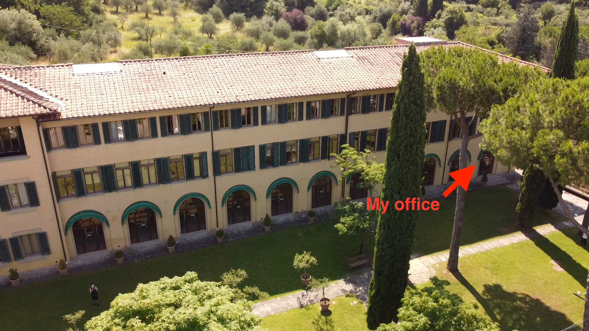

Git and GitHub for Social Science Research
Intermediate level: collaboration
Before we start
Initial questions
- Are you familiar with the basics of working with
GitandGitHub(create a repository, committing changes, etc.)? (see https://eui-library.github.io/git-and-github-for-social-science-research-basic/) - Have you ever collaborated with your colleagues using
GitandGitHub?
Agenda for today
- Introduction
- Core concepts and tools (branch, pull request, merge)
- Hand-on work in pairs
Learning objetives
- Adding collaborators to your repository
- Work safely together and in parallel
If we have time:
- Manage conflicts (what if you and your collaborators rewrite the same paragraph or piece of code?)
- Safeguard the “main” line of work by reviewing other’s contributions
Introduction
How we usually collaborate (on files)
Most researchers rely on one of two approaches — both of which can create invisible problems.
Email attachments
analysis_simo.R
analysis_simo_v2.R
analysis_anna_edits.R
analysis_FINAL_merged.R
analysis_FINAL_merged2.RShared drives
/OneDrive/project/
data_CLEAN.xlsx
data_CLEAN_new.xlsx
data_USE_THIS.xlsx
data_DO_NOT_USE.xlsxWhat can go wrong? There is no explicit record of who changed what, when, or why. Merging changes manually is error-prone and time-consuming.
Structured collaboration properties
Good collaborative workflows share three properties (Blischak et al., 2016):
- Traceability — every change is recorded with authorship and context
- Reversibility — any mistake can be undone without data loss
- Parallelism — multiple contributors work simultaneously without blocking each other
These properties are built into Git (and GitHub) by design.
Real-world research collaboration on GitHub
GitHub is where much contemporary collaborative research actually happens:
- The Turing Way — an open, community-driven handbook on reproducible research with 300+ contributors.
→ github.com/the-turing-way/the-turing-way - rOpenSci — peer-reviewed R packages for open science, developed collaboratively on GitHub.
→ github.com/ropensci - And many others, not necessarily “public”
Journals increasingly require code and data to be shared via GitHub or similar platforms as a condition of publication.
Collaboration workflow
*Branch | Pull Request | Merge — using GitHub Desktop
A big idea: branches
A branch is an independent copy of your project where you can work freely — without affecting the main version.
main ─────●─────────────────────────●──────▶
\ /
●───●───● feature-X ───●mainshall stay always stable and working- Each collaborator works on their own branch
- When work is ready, it is merged back into
main(through a pull request)
Think of a branch as a dedicated workspace for one task or one person.
Why branch? A research example
Imagine two co-authors working on the same project at the same time:
| Collaborator | Branch | Task |
|---|---|---|
| Simo | main |
Stable, last shared version |
| Simo | chapter2-rewrite |
Revising the literature review |
| Anna | robustness-checks |
Adding Table A3 |
When both are done, each branch is merged into main — independently reviewed and integrated.
Tip
You can leverage branches even if you are working solo: experiment without “touching” what works!
Opening a Pull Request
When your branch work is ready, you open a Pull Request (PR) — a formal proposal to merge your changes into main.
A Pull Request:
- Shows exactly what changed (a diff of every modified file)
- Provides a space for discussion and review before merging
- Creates a permanent record of why the change was made
- Can be approved or rejected by collaborators
A Pull Request is the peer review process built into your workflow.
Let’s work together!
(demo first)
Your feedback matters!

Any question?
Simone Sacchi
Research Data Librarian, EUI Library
simone.sacchi@eui.eu | resdata@eui.eu
EUI Library Research Data Guide - EUI Library Trainings

References
- Bryan, J. (2024). Happy Git and GitHub for the useR. happygitwithr.com
- Blischak, J. D., Davenport, E. R., & Wilson, G. (2016). A Quick Introduction to Version Control with Git and GitHub. PLOS Computational Biology, 12(1). doi:10.1371/journal.pcbi.1004668
- GitHub Docs. (2024). Managing branches in GitHub Desktop. docs.github.com/en/desktop
- GitHub Docs. (2024). About pull requests. docs.github.com/en/pull-requests
- GitHub Docs. (2024). Merging a pull request. docs.github.com/en/pull-requests
- Microsoft. (2024). Using Git source control in VS Code. code.visualstudio.com/docs/sourcecontrol
- Wilson, G., Bryan, J., Cranston, K., Kitzes, J., Nederbragt, L., & Teal, T. K. (2017). Good enough practices in scientific computing. PLOS Computational Biology, 13(6). doi:10.1371/journal.pcbi.1005510
End of the presentation
BACKUP SLIDES
Inviting a Collaborator to Your Repository
For private repositories, collaborators must be explicitly invited. For public repositories, anyone can view and clone — but only invited collaborators can push.
Steps on GitHub.com:
- Go to your repository → Settings tab
- Click Collaborators in the left sidebar (under Access)
- Click Add people
- Search by GitHub username or email address
- Select the appropriate role and send the invitation
- The collaborator receives an email and must accept before gaining access
Collaborators receive an email invitation link. It expires after 7 days — you can resend it from the same settings page.
Collaborator Roles and Permissions
GitHub offers five permission levels. Choose the role that matches each person’s responsibilities.
| Role | Read | Clone | Push | Merge PRs | Manage settings |
|---|---|---|---|---|---|
| Read | ✅ | ✅ | ❌ | ❌ | ❌ |
| Triage | ✅ | ✅ | ❌ | ❌ | ❌ |
| Write | ✅ | ✅ | ✅ | ✅ | ❌ |
| Maintain | ✅ | ✅ | ✅ | ✅ | partial |
| Admin | ✅ | ✅ | ✅ | ✅ | ✅ |
Recommended for most research collaborations:
- Give co-authors and research assistants the Write role
- Keep Admin for the PI or repository owner only
- Use Read for external reviewers or replicators
Cloning the Repository: What Collaborators Do
Once invited and accepted, a collaborator clones the repository to create a local copy.
GitHub Desktop:
- Open GitHub Desktop and sign in
- File → Clone Repository
- Select the GitHub.com tab — invited repos appear automatically
- Choose the repo and a local folder
- Click Clone
VS Code:
- Open the Source Control panel (
Ctrl+Shift+G) - Click Clone Repository
- Paste the repo URL from GitHub.com
(green Code button → HTTPS tab) - Choose a local folder and confirm
After cloning, collaborators create a branch, do their work, commit, push, and open a Pull Request — the workflow from Part II.
The Full Collaboration Loop
┌─────────────────────┐
│ github.com/repo │ ← shared, central
└────────┬────────────┘
│
┌────────────────┼────────────────┐
↓ ↓
┌─────────────┐ ┌─────────────┐
│ Simo's │ │ Anna's │
│ computer │ │ computer │
│ branch: │ │ branch: │
│ ch2-edit │ │ table-a3 │
└──────┬──────┘ └──────┬──────┘
│ Push + Pull Request │ Push + Pull Request
└──────────────┬──────────────────┘
↓
Review → Merge → mainRule of thumb: Always pull
mainbefore starting a new branch — this ensures you build on the latest merged work.
Reviewing and Merging a Pull Request
Once the PR is open, collaborators can review it on GitHub.com:
- Click Files changed to see the diff line-by-line
- Leave inline comments on specific lines by hovering and clicking the
+icon - Click Review changes → choose Approve or Request changes
- When approved, click Merge pull request
- Delete the branch when prompted — safe to do so, full history is preserved
In GitHub Desktop: After merging on GitHub.com, switch back to main and click Fetch origin to download the merged result locally.
Key Takeaways
Collaboration essentials:
- 🌿 Branch — one branch per task or contributor; never work directly on
main - 💬 Commit often — small, frequent commits with meaningful messages
- 🔁 Pull Request — propose, review, discuss, and merge changes
- 👥 Invite collaborators via Settings → Collaborators on GitHub.com
- ⬇️ Always pull
mainfirst — before starting any new work
Tools:
- GitHub Desktop → repo management, branching, PRs
docs.github.com/en/desktop - VS Code → edit and commit in one place
code.visualstudio.com/docs/sourcecontrol
Git and GitHub for Social Science Research: Intermediate level